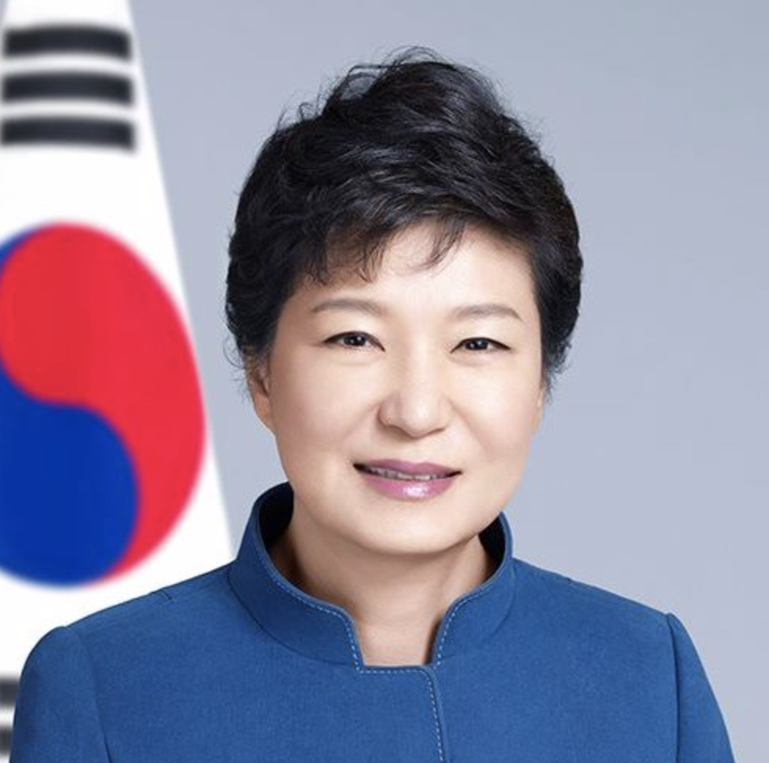

Before her presidency, Park was chairwoman of the conservative Grand National Party (GNP, formerly called the Saenuri Party from February 2012 onwards now called the Liberty Korea Party) from 2004 to 2006 and 2011 to 2012. She was also a member of the National Assembly, serving four consecutive parliamentary terms between 1998 and 2012. She started her fifth term as a representative elected via national list in June 2012. Her father, Park Chung-hee, was the President of South Korea from 1963 to 1979, serving five consecutive terms after he seized power in 1961.
In 2013 and 2014, Park ranked 11th on the Forbes list of the world's 100 most powerful women and the most powerful woman in East Asia.[3] In 2014, she ranked 46th on the Forbes list of the world's most powerful people, the third-highest South Korean on the list, after Lee Kun-hee and Lee Jae-yong. On 9 December 2016, the National Assembly impeached Park on charges related to influence peddling by her top aide, Choi Soon-sil.[4] Then-Prime Minister Hwang Kyo-ahn assumed her powers and duties as Acting President as a result.[5] The Constitutional Court upheld the impeachment by a unanimous 8/0 ruling on 10 March 2017, thereby removing Park from office.[6] On 6 April 2018, South Korean courts sentenced Park to 24 years in prison which was later increased to 25 years.[7][8] Park is currently imprisoned at Seoul Detention Center.